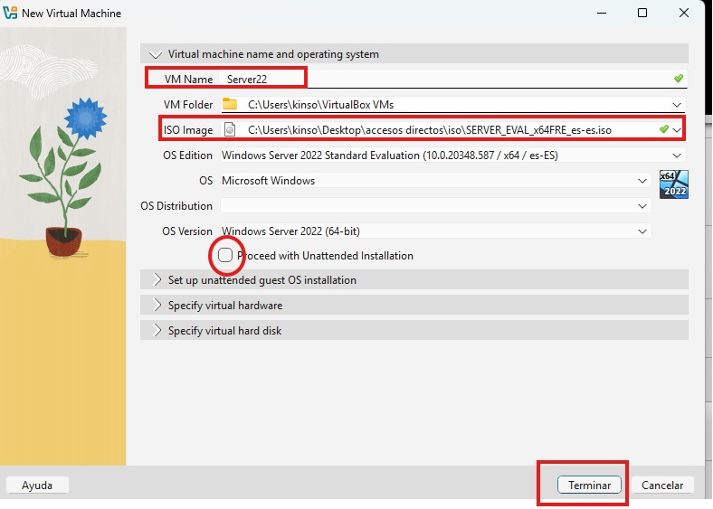
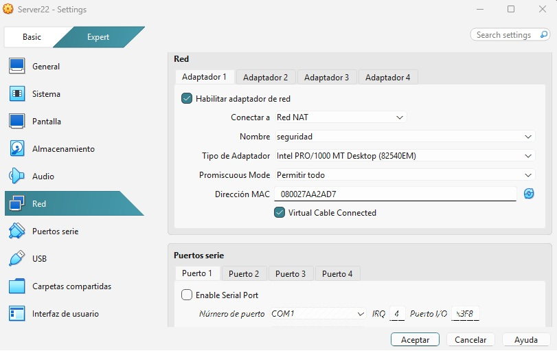
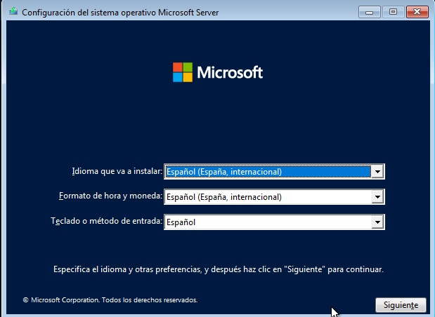
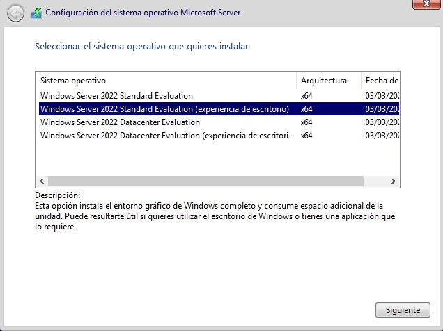
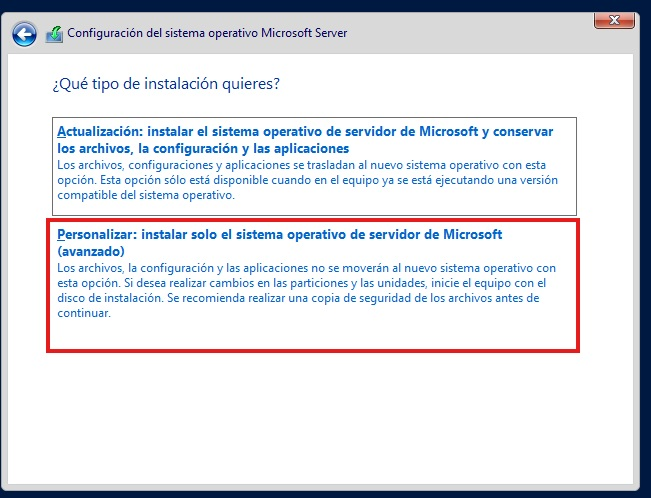
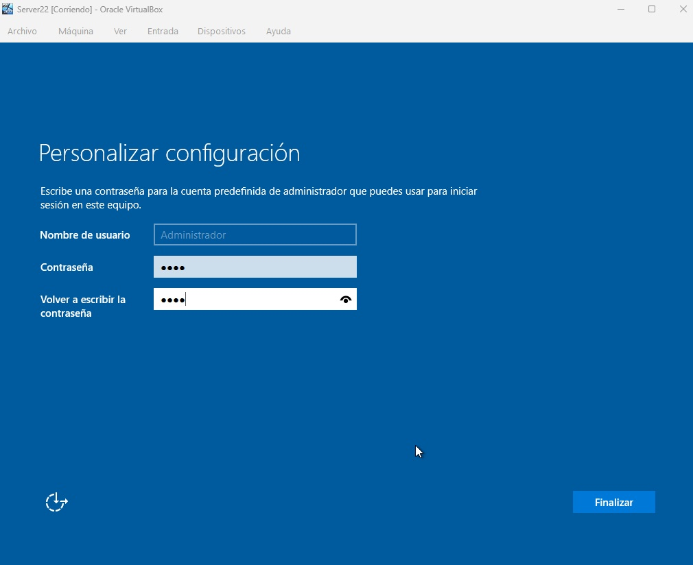

Windows Server 2022
Instalación y Red
Procedemos a realizar la instalación del Windows server (en este
caso vamos a la versión 22). Lo primero es bajarnos el archivo .iso
a ser posible y recomendado de la página oficial de Windows, ponemos
en el navegador windows server 22 y le damos al primer enlace ahí
nos lleva a la (página oficial) desde donde nos podremos descargar
la iso. Yo me he bajado la versión en español (Descargas ISO Edición
de 64 bits). En mi caso he creado una carpeta para guardar los
archivos .iso, desde la caperta de descargas me traigo el archivo a
mi carpeta dedicada. El siguiente paso sería crear el servidor. Para
ello abrimos la máquina virtual presionamos en nueva. Y seguimos con
los siguientes pasos:
-
En VM Name le ponemos el nombre del servidor por ejemplo Server22
-
En la parte de ISO Image abrimos el desplegable y buscamos la
localización del archivo .iso que guardamos en la carpeta dedicada
y seleccionamos el archivo correspondiente
-
Y por último desmarcamos la opción de Proceed wiht Enattended
Installation ( si no desmarcamos este botón hay que configurar
ciertas cosas que me daban problemas a la hora de instalar la
máquina)
- Botón terminar.

Ahora antes de iniciar la instalación vamos a configurar la red,
para ello vamos al apartado red donde pone conectar a, abrimos el
desplegable y seleccionamos Red NAT, y automáticamente te completa
con la red que hemos creado (solo hay una). Después en el
desplegable de Promiscuous Mode seleccionamos Permitir todo y ya
tenemos todo para comenzar la instalación.

Le damos a iniciar. Primero te aparece la pantalla para escoger el
idioma (si bajamos la iso en español ya por defecto no trae el
idioma en español) pulsamos en siguiente.

Le damos en instalar ahora y nos lleva a otra ventana en la cual
debemos escoger el sistema operativo en este caso es recomendable
bajar la experiencia de escritorio.

Pulsamos en siguiente. Aceptamos los acuerdos de licencia,
siguiente. Escogemos la segunda opción. Y en la próxima pantalla le
damos a siguiente.

Personalizar configuración Debemos de asignar una contraseña al
usuario administrador en mi caso le voy a poner Kinso_1978,
confirmamos contraseña y le damos al botón de finalizar

Presiona Ctrl+Alt+Supr para desbloquear. Para ello nos vamos a la
parte superior donde pone entrada, seleccionamos teclado e insertar
Ctrl+Alt+Supr ahora podemos entrar en el nuevo servidor con la
cuenta de administrador. Una vez instalado el servidor voy a crear
otras máquinas para poder darle los correspondientes servicios.